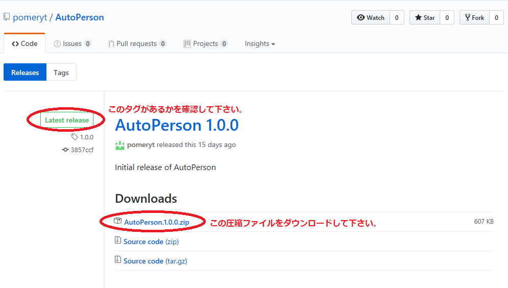

このプログラムはJavaが必要です。
もしJavaが設置されていない方はJava1.8.0以上のバージョンを
こちらでダウンロードして下さい。
Step 1: Latest releaseタグが付いたた圧縮ファイルをダウンロードして下さい。
こちらをクリックして一番最新バージョンをダウンロードして下さい。

Step 2: ダウンロードした圧縮ファイルを解凍して下さい。
Step 3: AutoPerson.exeを実行したらプログラムがちゃんと作動するか確認して下さい。
実行ファイルを実行したら
scriptと
setting フォルダが生成されます。